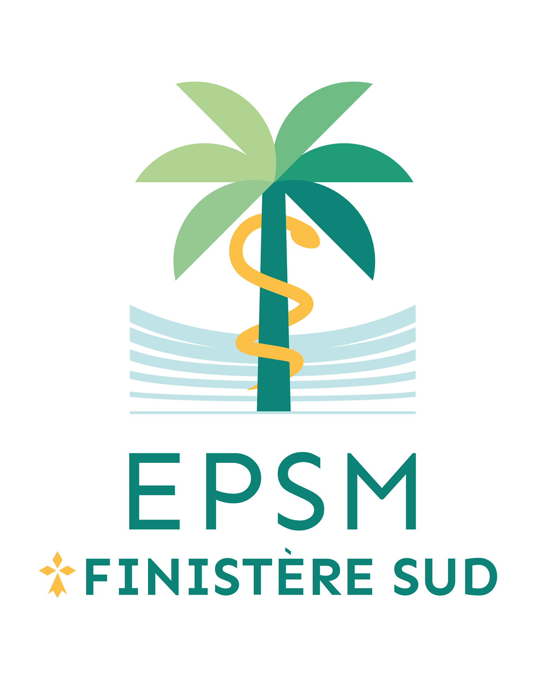

À travers ces stages, j'ai eu l'opportunité de développer mes compétences et de mettre en pratique mes connaissances dans des environnements variés et stimulants.

Lors de mon stage de 5 semaines à l'EPSM du Finistère Sud,
j'ai eu l'opportunité de travailler sur divers aspects techniques,
me permettant de développer mes compétences en administration système et en support technique.
J'ai notamment participé à la configuration de postes informatiques
et au déploiement de GLPI (Gestion Libre de Parc Informatique),
un outil de gestion d'incidents et d'inventaire.
De plus, j'ai été impliqué dans la mise en place d'une authentification unique (SSO),
simplifiant l'accès aux applications pour les utilisateurs
tout en améliorant la sécurité des connexions.
Ce stage m'a permis d'acquérir une expérience précieuse
dans la gestion de projets IT et le déploiement d'outils de gestion en entreprise.
Vous pouvez me contacter via ewanriva6@gmail.com.